Overview
The Baur research group works on composite structures for aerospace, and while I was there two of its projects converged on the same unsolved problem. The first concerned space debris: as low Earth orbit and medium Earth orbit get more crowded, high-speed impacts on orbiting and launching spacecraft are becoming more common, and those impacts leave internal structural damage such as delamination. The group was using thermographic scanning to identify that damage, but needed ground-truth volumes to compare the thermography against. The second project concerned vascular channels embedded inside ceramic-matrix composites (CMCs) — hollow passages that serve first as a path for resin during manufacturing and later as a coolant path in the leading edge of a high-speed aircraft.
Both projects hinge on accurately characterizing a void: delamination in the impacted laminates, and the channel itself in the CMCs. Both were being measured with X-ray CT, and in both cases the segmentation — deciding, slice by slice, which pixels are void and which are material — was the bottleneck. My work over the year was to fabricate and test the vascular composites, and to develop a streamlined segmentation and analysis pipeline that could turn a thousand-slice CT stack into usable numbers for either project.
What I did
Manufacturing and testing vascular composites. On the CMC side I helped develop a method for building vascular channels by pairing CF3D printing with 3D-printed sacrificial filament rods embedded into the material. The rod is burned out and the composite then goes through the standard polymer infiltration and pyrolysis (PIP) process — resin infiltration, curing, and pyrolysis, repeated with curing at progressively higher temperatures. X-ray CT scans after both infiltration and pyrolysis let me confirm the channel survived; the method reached roughly an 80% success rate for producing an intact channel. I also ran uniaxial tensile and double cantilever beam (DCB) tests on the resulting composites to characterize their mechanical properties, so the manufacturing method could be evaluated on strength and interlaminar fracture toughness rather than geometry alone.
Getting CT data into a usable state. Each scan produced roughly 800–1,200 TIFF slices, and many of them came out too dark or too flat in contrast to be usable in Dragonfly, the image-processing software the lab uses. I built an ImageJ preprocessing routine that cropped away the unnecessary portions of each frame, converted the stack from 16-bit to 8-bit, and adjusted brightness, contrast, and thresholding just far enough to bring the grain boundaries back while keeping the images continuous-toned rather than binary. That cut file sizes substantially and made the stacks fast enough to work with.
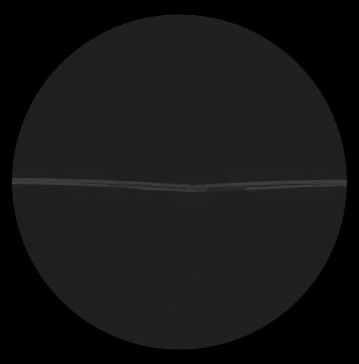
Training the deep learning segmentation. In Dragonfly I manually segmented five to eight slices per sample as training data, coloring each region of interest (ROI). My first pass used three ROIs — void, composite, and air — and it failed in a specific and instructive way: scanning artifacts made patches of intact composite read as void, so the trained model propagated those misclassifications across the whole stack. Adding a fourth ROI, which I labeled “composites that look like void,” gave the model an explicit class for the artifact signature and sharply improved its accuracy.
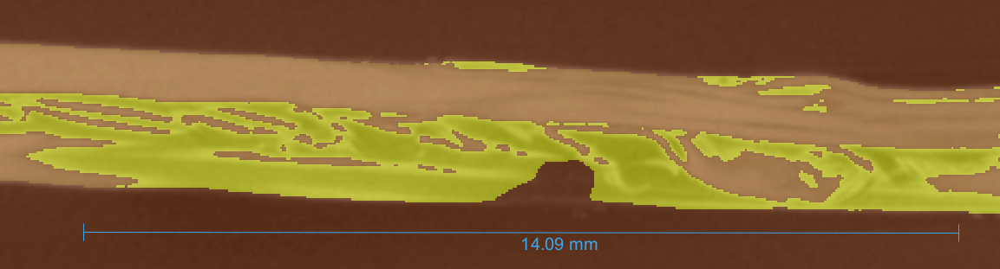
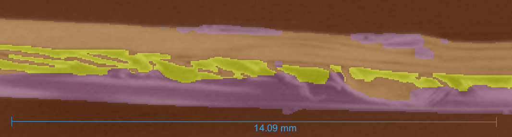
I trained a U-Net semantic segmentation model on those slices, tuning the parameters by trial until the results held up across the stack: a patch size of 128 pixels, a batch size of 32, and an augmentation factor of 3. Trained this way, the model segmented CMC laminates across varying image quality and deformation levels at roughly 98% accuracy. The residual errors were mostly along ROI edges, and I cleaned those up with morphological operations — dilate, erode, open, and close — before exporting the final void dataset.
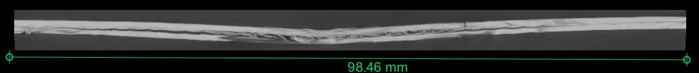
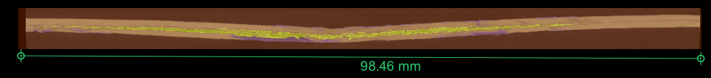
Segmenting the vascular channels. The same deep learning approach did not transfer to the channel project. Because the channel occupies only a very small fraction of each slice, the patch-to-batch ratio that worked for delamination could not capture enough context, and the model would classify an entire slice as either void or composite. Rather than force it, I switched to Dragonfly's interpolation tool: manually segmenting about one tenth of the slices and extrapolating across the rest by tracking how the defined ROIs evolve through the stack, then post-processing with manual corrections and an island-removal pass that clears pixel clusters of five or fewer.
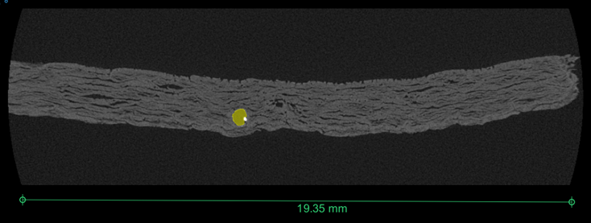
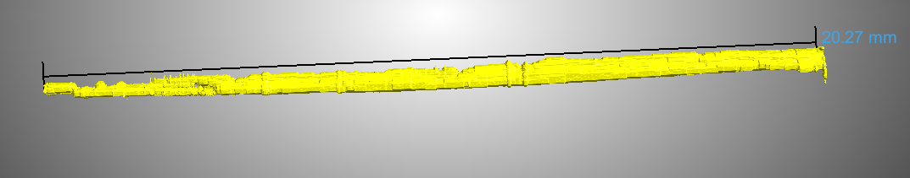
Python image analysis. With segmentations in hand, I wrote Python tooling to turn them into measurements. For the damaged composites, I exported the void regions from Dragonfly as a series of binary images, loaded them with cv2 into a 3D array (white pixels as 1, black as 0), and summed along the through-thickness axis to produce top-down heat maps of delamination depth with matplotlib, along with the projected area of the damage. These heat maps are what the group's thermographic scans get compared against, since thermography also sees the composite from the top down.
For the channels, the goal was to quantify how circular and how straight they stayed through the PIP process. The code first screened each binary slice for readability, discarding frames that broke into multiple small islands and would have skewed the statistics. For each surviving slice it found the center of mass and measured the distance to the channel edge at every degree, averaging those radii across all slices to build a radial plot. I deliberately used the center of mass rather than the channel's nominal axis as the reference point: the axis does not pass through the channel in every slice of every sample, which produces negative radii, and measuring a circle's curvature from any point but its center gives non-constant radii by construction. To capture displacement, which the radial plots miss, I defined an axis between the centers of mass of the first and last slices and plotted each slice's distance from it.
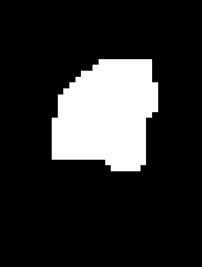
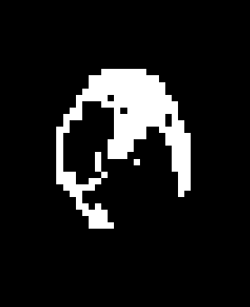
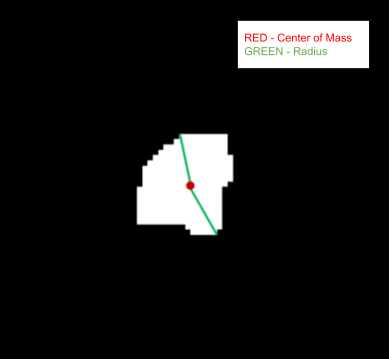
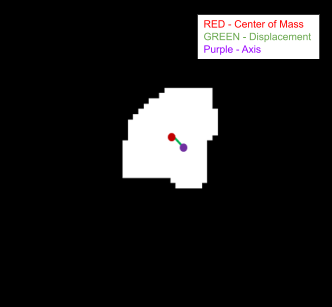
Tools & methods
Dragonfly for 3D reconstruction, manual ROI segmentation, U-Net deep learning segmentation, interpolation, and morphological post-processing; ImageJ for CT stack preprocessing (cropping, 16-bit to 8-bit conversion, contrast and threshold adjustment); Python with cv2, NumPy, and matplotlib/pyplot for binary-image analysis, delamination heat maps, projected-area calculation, and the radial and displacement plots; CF3D printing with sacrificial 3D-printed filament rods for vascular channel fabrication; the PIP (polymer infiltration and pyrolysis) process for CMC manufacturing; X-ray CT for validation; and uniaxial tensile and double cantilever beam testing for mechanical characterization.
Outcome
The segmentation workflow produced the first consistent void datasets for both projects. On the impacted laminates, delamination volume grew quadratically with impact energy (21.53 mm³ at 5 J, 117.39 mm³ at 10 J, 371.59 mm³ at 20 J, R² = 1) while the projected area grew linearly (228.17, 485.43, and 1072.45 mm², R² = 0.999). That divergence matters for the group's thermography work: because projected area loses a dimension, it is not sufficient on its own to characterize impact damage, which is exactly the kind of limit the CT ground truth was meant to expose.
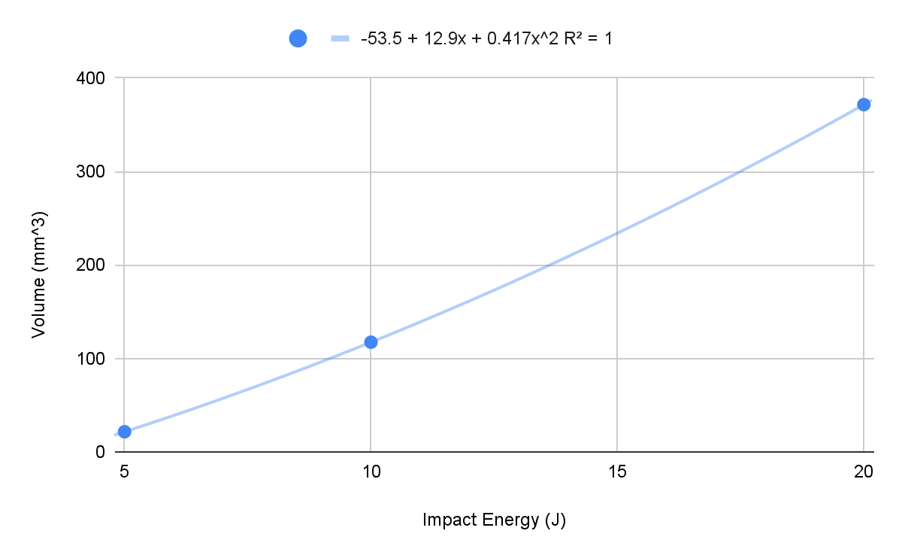
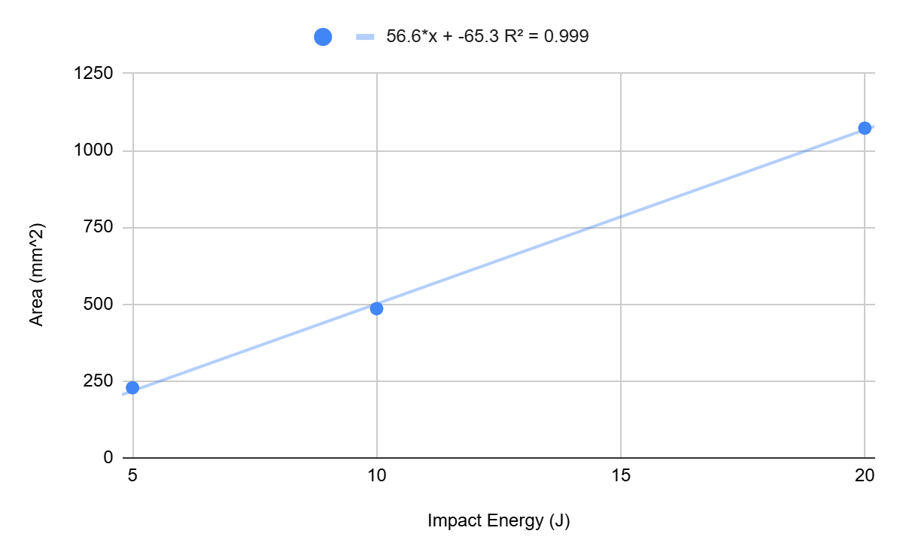
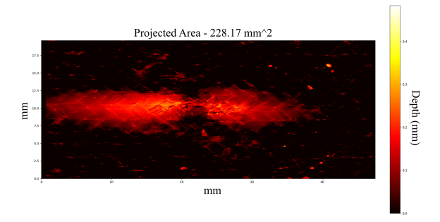
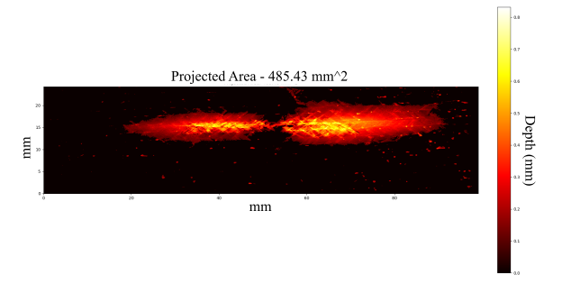
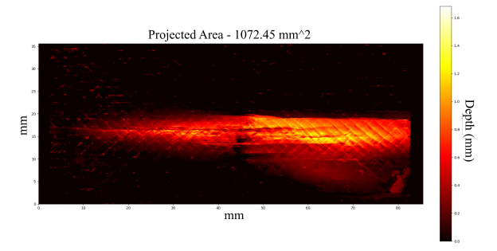
On the vascular channels, average radius held remarkably steady across every filament type and every stage of the PIP process, at 0.22–0.23 mm. All of those values sat below the 0.25 mm the printed rod should have produced, which suggests that using a filament to form the channel slightly shrinks it during printing. Displacement told the more useful story: ABS drifted the most (0.08 mm average), while PLA and Sac were essentially equivalent (0.04–0.05 mm), and the radial plots showed PLA producing the most consistent channels — lower standard error at each degree, and closely matching plots between the initial burnout and the standard process.
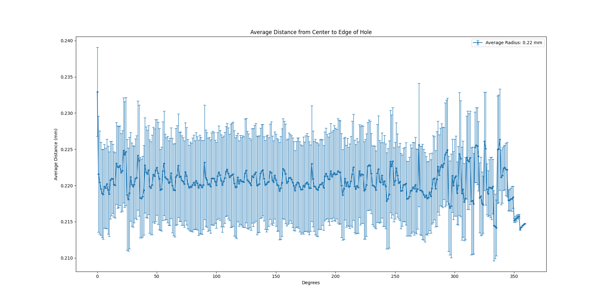
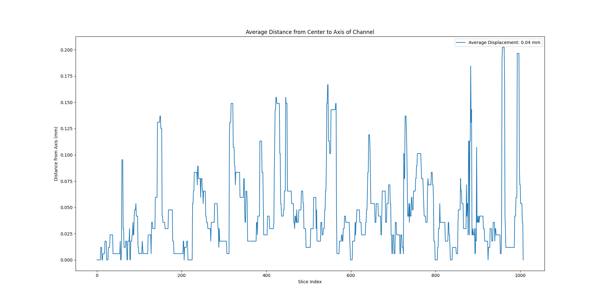
The workflow's clear limit was large holes. When an impact punched most of the way through the laminate — the 50 J samples — the model could not reliably tell void from air, which is understandable given that the two are hard to distinguish by eye as well. So the method holds for impact energies of 20 J and below, and standardizing the CT scanning procedure is the prerequisite for pushing past that.
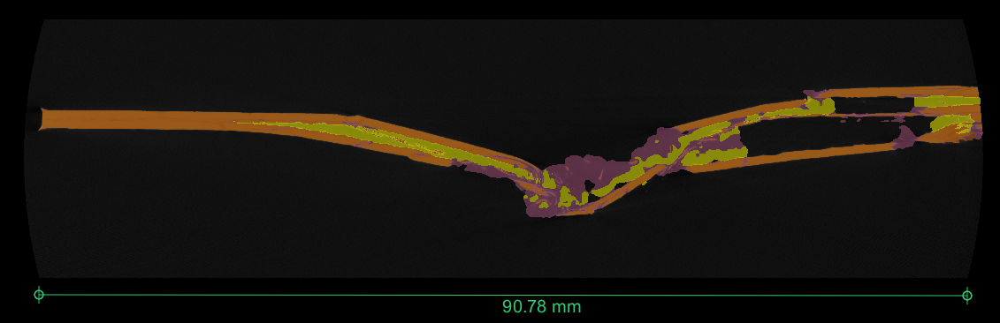
I wrote the work up as an independent-study paper, and left the group with a repeatable pipeline rather than a one-off result: preprocessing, a trained segmentation model for damaged laminates, an interpolation-based route for the channels, and Python tooling that turns either into volumes, areas, heat maps, and geometry statistics.